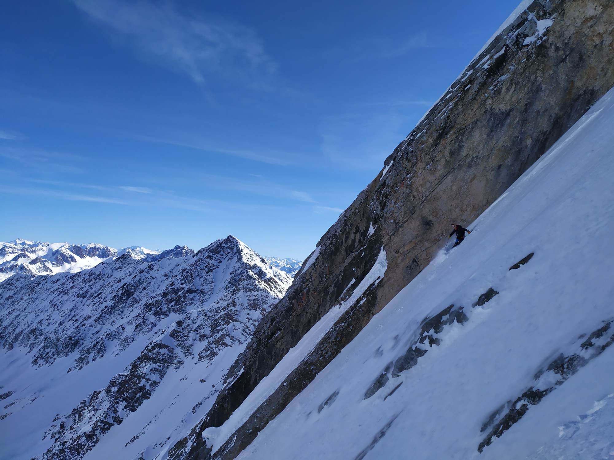

Léo Ledru
I have a PhD in biodiversity, ecology and environment from the Alpine Ecology Laboratory (LECA). My research interest is theoretical ecology, and in particular I try to investigate how eco-evolutionary dynamics organize ecosystems using mathematical and numerical models. I'm particulary interested by the theory of multi-level selection which represents a concept underlying my thesis works. I am now considering either continuing my career in academic research with a Post-Doctorate, or diversifying my experience with a job as a modelling engineer. Indeed, I appreciate both theoretical issues and modelling techniques.
Skills
- Matlab
- Python
- R
- Blender
- Dynamical Systems Analysis (ODE, PDE)
- Spatialy Explicit Individual Based Models
- Writing of scientific articles
- Scientific conference
Publications
Spatial structure of natural boxwood and the invasive box tree moth can promote coexistence Ecological Modelling
Mutualists construct the ecological conditions that trigger the transition from parasitism Peer Community Journal
Can the evolution of adaptive foraging rescue consumers threatened by environmental change? (In preparation)
Experience
PhD thesis in theoretical ecology: Modelling part-whole interactions in ecology and evolution: spatial structure and multilevel selection
Oral communication at the GfÖ Annual Meeting: "How adaptive is adaptive foraging"
20min of oral presentation of some results about the Eco-evo-foraging project in the session "Traits, networks, and ecosystem functioning". I explained how my model shows that the foraging behavior is not always adaptive in the sense of favoured by natural selection. I also showed that the evolution of foraging behavior can have consequence at the community scale, especially on diversification and stability.
Oral communication at the National Symposium "Boxwood, issues, garden renewal and rebirth"
20min of oral presentation of my work on the box tree moth project . The symposium is about ecology of conservation so I presented the results about the persistence of the box tree moth and the impact on the natural boxwoods.
Master's internship: Population dynamics of box tree moth and boxwood: Theory and Field
Start of the Box tree moth project .
Education
University Savoie Mont Blanc
University Aix-Marseille
University Savoie Mont Blanc
High school Ambroise Croizat Moûtiers
Other Interests
Popularization of science

I plan to do science popularization based on youtube videos . The objective is to propose theoretical ecology topics,
with mathematical and numerical analysis, but with a playful visual. It also allows me to develop my skills in programming and 3D animation,
a field I really enjoy learning.
Mountain sports
I am passionate about the mountains and most of the possible ways to travel them: skiing, snowboarding, mountaineering, climbing, trail running, paragliding, cycling. I particularly appreciate the brain shutdown in very long efforts.
I like to share achievements in skiing, mainly because I find this discipline very aesthetic, while trying to stay on the edge of the powerful
attractor of social networks.
youtube channel
magazine article